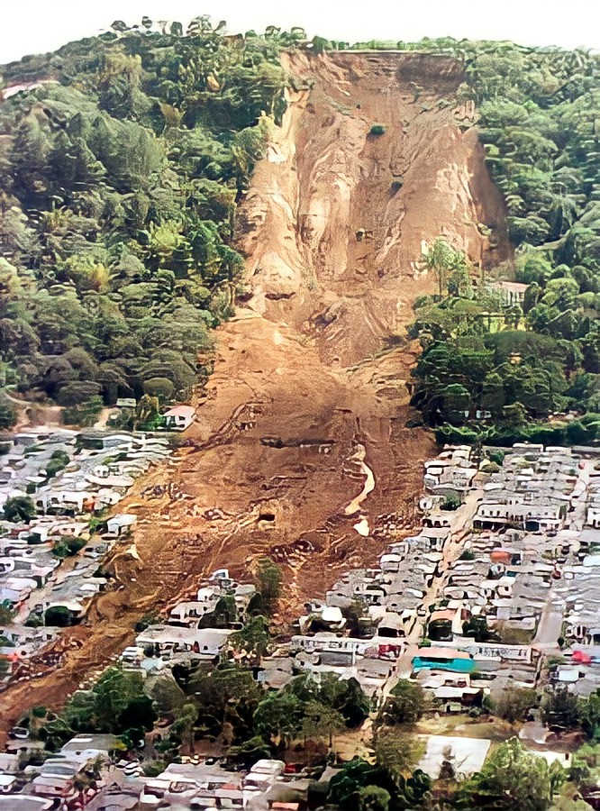

Landslide

Landslides, also known as landslips,are several forms of mass wasting that may include a wide range of ground movements, such as rockfalls, deep-seated slope failures, mudflows, and debris flows.Landslides occur in a variety of environments, characterized by either steep or gentle slope gradients, from mountain ranges to coastal cliffs or even underwater,in which case they are called submarine landslides. Gravity is the primary driving force for a landslide to occur, but there are other factors affecting slope stability that produce specific conditions that make a slope prone to failure. In many cases, the landslide is triggered by a specific event (such as a heavy rainfall, an earthquake, a slope cut to build a road, and many others), although this is not always identifiable.
Landslides occur when the slope (or a portion of it) undergoes some processes that change its condition from stable to unstable. This is essentially due to a decrease in the shear strength of the slope material, an increase in the shear stress borne by the material, or a combination of the two. A change in the stability of a slope can be caused by a number of factors, acting together or alone.